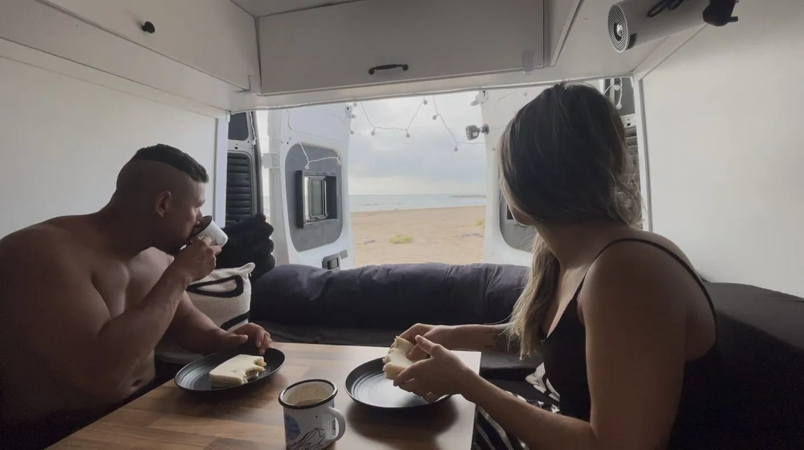
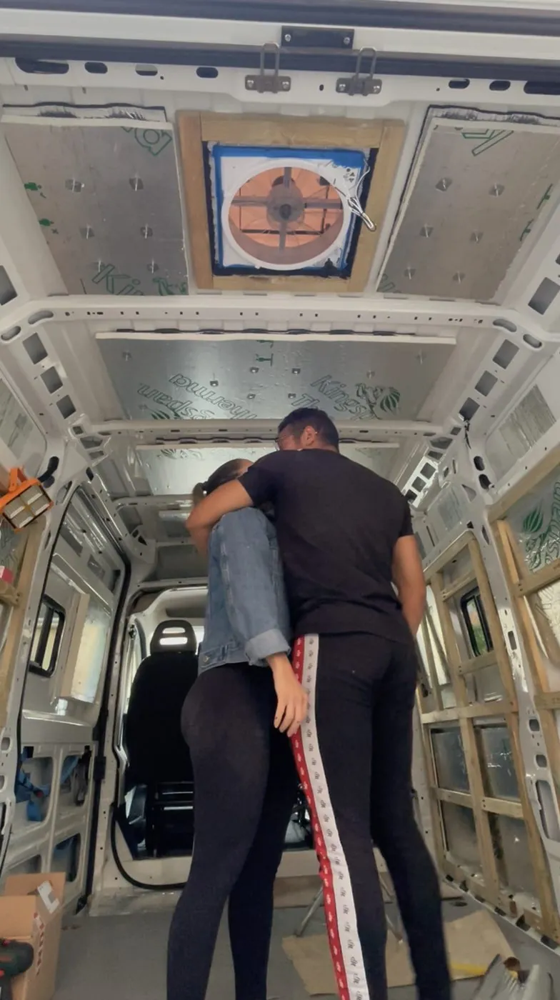
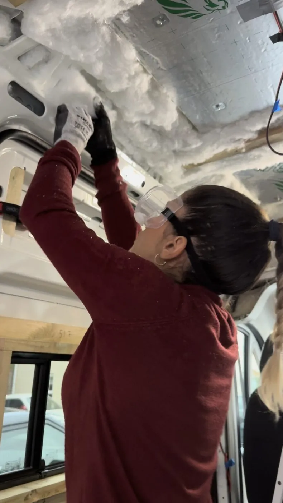
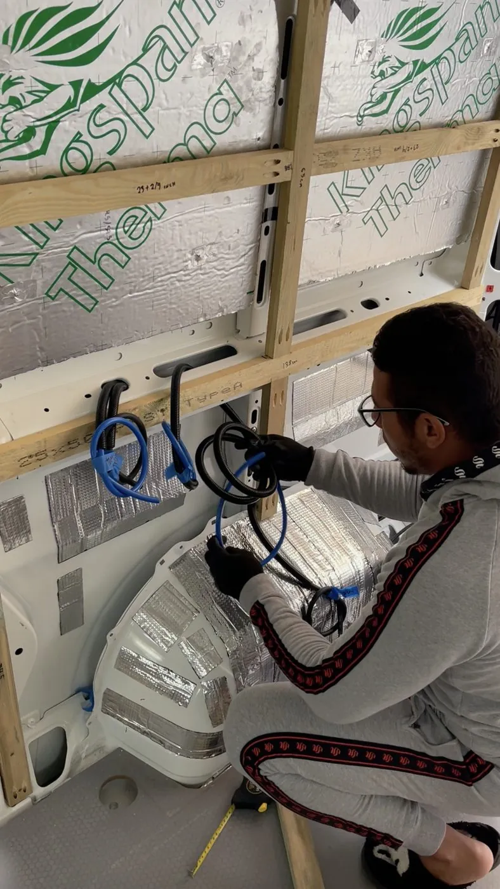
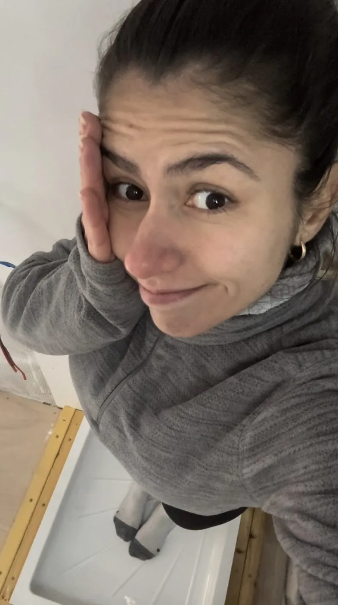
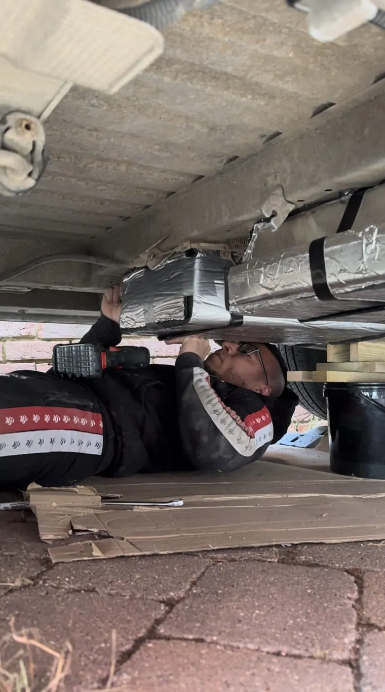
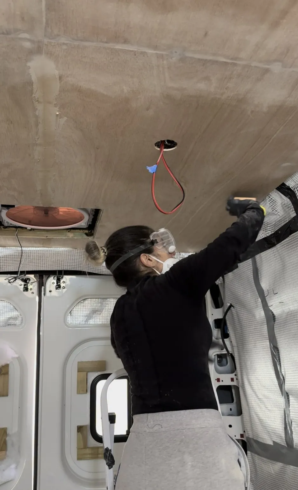
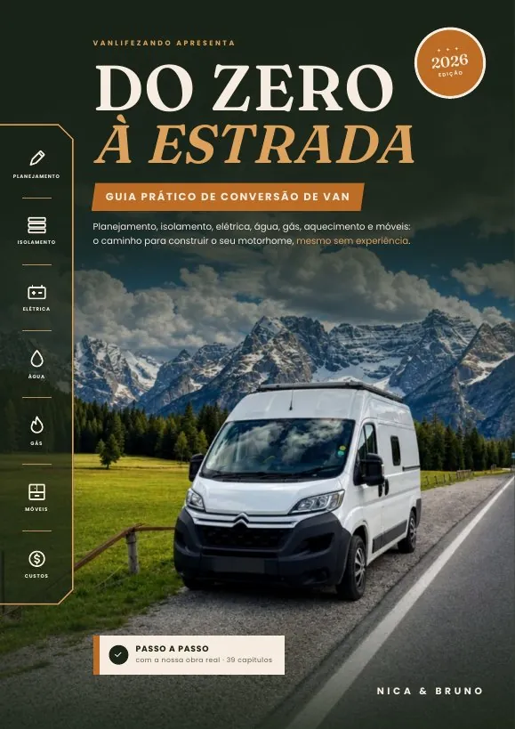

Quando a gente decidiu comprar a van e cair na estrada, o plano era lindo, mas dava um friozinho na barriga. Eu, Nica, vivia com a cabeça cheia de perguntas: onde a gente ia tomar banho? E a água para esse banho, de onde viria? Será que dá para dormir com o barulho da rua? E a segurança? E, acima de tudo: será que dois sem nenhuma experiência iam mesmo conseguir construir uma casa dentro de uma van?
Conseguimos. A nossa casa sobre rodas ficou pronta em abril de 2025. A ideia era tirar um ano sabático pela Europa, mas a gente se apaixonou por esse jeito de viver e pela nossa casinha, e foi ficando.
Aprendemos muito: sobre construção, claro, mas também a economizar recursos, a ser mais conscientes e muito sobre nós dois. Conhecemos gente incrível pelo caminho. Hoje a gente pensa diferente sobre muita coisa, de tanto viver com menos e de ter a chance de morar um tempinho em cada lugar.

“Não é um mochilão: é conhecer lugares novos e ter sempre o seu lar com você! É incrível.”
601dias morando na van
16países visitados
1lar, vista nova toda semana
NOSSA CASA SOBRE RODAS
Como uma van de carga virou a nossa casa
Toque em Antes e Depois para ver a transformação: do primeiro dia de obra à casinha pronta.
Seis meses construindo o nosso motorhome no inverno inglês
A gente construiu tudo sozinhos, em 6 meses, em pleno inverno da Inglaterra. Foi doido: mãos e pés congelando, dias curtos (tivemos que aprender a trabalhar no escuro) e muita, muita chuva. Mas cada parafuso dessa casa tem a nossa história.
E POR QUE FIZEMOS NÓS MESMOS?
Uma conversão feita por uma empresa no Reino Unido costuma passar dos £30 mil. No Brasil, segundo reportagens de 2026, uma conversão profissional custa de R$ 80 mil a R$ 250 mil, sem contar o veículo. A gente fez a nossa por cerca de £13 mil em materiais e equipamentos, com as próprias mãos e sem experiência nenhuma.
No caminho, descobrimos que construir uma casa sobre rodas é um conhecimento que vale ouro: tem muita gente transformando isso em profissão. E o mercado só cresce: no Brasil, o setor de motorhomes vive uma fase de forte expansão, com cada vez mais profissionais especializados e peças disponíveis, segundo o Correio Braziliense (2026).
BASTIDORES DA OBRA

Mais uma etapa vencida

Isolamento do teto

Fiação e água

A base do chuveiro

Até embaixo da van

Lixando o teto, de óculos e máscara
01
Isolamento
Parece que nem é importante, mas é MUITO. É ele que deixa a casa quentinha no inverno e fresca no verão. Do Zero à Estrada →
Compramos os móveis prontos na IKEA para ganhar tempo. Se fôssemos construir a cozinha do zero, ia demorar muito mais.
APRENDEMOS NA PRÁTICA
Foram dois. O primeiro: só conferimos o inversor três meses depois de ele chegar. Tinham mandado o modelo errado e quase não aceitaram a troca: seria um prejuízo de £1.000. Depois de muita agonia (e briga), trocaram pelo correto.
O segundo: deixar o furo da saída de ar do Truma para o fim, com a parede já fechada, isolada e cheia de cabos. Existem poucos lugares onde esse cano pode passar, a gente não sabia se tinha fio atrás e o isolamento enrolava na serra. Um caos, mas deu certo.
A MAIOR CONQUISTA
A cabine de chuveiro. Levou uns 3 meses, construída em paralelo com o resto da casa. Foi tão cansativo que a gente quase desistiu e transformou o espaço em guarda-roupa. Hoje, cada banho quente na estrada tem gostinho de vitória.
Uma nota de segurança: instalamos o gás nós mesmos, mas, se você não tiver confiança nessa parte, vale contratar um profissional para conferir. Gás não é lugar para improviso.
OS NOSSOS GUIAS
Tudo o que aprendemos na obra, num guia para você
Escrevemos os guias que a gente queria ter lido antes de começar a obra: com fotos reais da nossa obra, números de verdade e o que aprendemos errando e acertando.

131 páginas · construção
Do Zero à Estrada
O guia que a gente queria ter lido antes de começar a obra: tudo o que fizemos, na ordem real, com fotos da nossa van.
•Do baú vazio à primeira viagem, etapa por etapa
•Isolamento, elétrica, água, gás, móveis e banheiro
•Custos reais da obra e lista de compras completa
•Ferramentas que usamos e as que fazem falta
•Os erros que cometemos, para você não repetir
•Construindo no Brasil: os equivalentes dos produtos aí
•Quem sonha em construir a própria casa sobre rodas e não sabe por onde começar
•Quem já comprou a van e quer evitar os erros mais caros
•Quem prefere entender cada etapa antes de contratar alguém
PERGUNTAS FREQUENTES
Em que formato eu recebo?
Em PDF, com sumário clicável. Dá para ler no computador, no tablet ou no celular, e imprimir se quiser.
Serve para quem vai construir no Brasil?
Sim. Os guias trazem quadros “Brasil e Europa”, os equivalentes dos produtos no Brasil e uma página só sobre o que muda para quem constrói aí.
Tem a planta e as medidas da van de vocês?
Não. Cada van tem um tamanho, e a nossa não serve para a sua. O guia ensina você a planejar o seu próprio layout.
Preciso ter experiência?
Não. Nós também não tínhamos. Os guias foram escritos para quem está começando do zero.
Vocês são profissionais?
Não somos eletricistas nem marceneiros: contamos o que fizemos e aprendemos na prática. Para elétrica e gás, recomendamos sempre a revisão de um profissional.
O DIA A DIA
Como a vida funciona dentro da van
As perguntas que mais recebemos, respondidas de verdade. Toque em cada tema.
💧
Água e banho
Em vários países da Europa existem áreas de serviço com água, gratuitas ou por um valor simbólico, e a gente tenta passar mais tempo nessas regiões. Onde não tem, enchemos o tanque em postos de gasolina e fontes públicas. E sim: cada um toma banho todo dia!
☀️
Energia
No verão, as placas solares dão conta de tudo: 100% de autonomia, mesmo trabalhando o dia inteiro dentro da van. No inverno, precisamos recarregar pelo menos uma vez por semana, principalmente quando não rodamos muito, e procuramos pontos de recarga.
📶
Internet
Esse é o nosso “aprendendo a lidar na base do ódio” haha. Usamos um roteador com chip da EE, operadora britânica que funciona em toda a Europa, e uma antena externa: com a van fechada, o isolamento deixa o sinal do celular mais fraco, dependendo de onde estamos. O sonho é colocar uma Starlink e acabar com o sofrimento.
📐
Espaço
No banheiro só cabe um por vez, mas no resto da casa a gente aproveitou bem cada cantinho, mesmo sendo uma van média: dá para ficarmos os dois na cozinha ao mesmo tempo, e a cama é bem espaçosa. E a ideia sempre foi viver mais do lado de fora, na natureza. A van é a base; a vida acontece lá fora.
🔇
Barulho
Era um dos nossos medos, mas o isolamento ficou muito bom: quase não ouvimos o que acontece lá fora, a não ser que seja um barulho bem perto da van. Procuramos ruas mais afastadas e, quando ficamos mais tempo num lugar, como nas temporadas de trabalho, escolhemos um cantinho tranquilo. E, se incomodar, é só mudar: a casa tem rodas.
💻
Trabalho remoto
Hoje a gente trabalha com criação de conteúdo e também faz trabalhos de temporada, quando aparece uma boa oportunidade.
🧺
Lavanderia
Lavamos a roupa nas lavanderias das cidades por onde passamos, mais ou menos de 15 em 15 dias.
♻️
Lixo
A gente tem que planejar e procurar: usamos lixeiras públicas e pontos de descarte. Em algumas regiões, elas são difíceis de achar.
🌙
Onde dormir
O Park4Night é o nosso melhor amigo: um app colaborativo onde achamos lugar para dormir, água, energia, lixeira e lavanderia. Sempre pesquisamos as regras de cada país e prestamos atenção às placas. Hoje tentamos ficar pelo menos uma semana em cada lugar. Se a gente não gosta, muda rápido: a melhor parte de ter uma casa móvel.
🔒
Segurança
Câmeras de segurança, alarme e cadeados nas portas. Dormimos tranquilos.
QUANTO CUSTA
Quanto custa viver em motorhome
Os nossos números reais, no ritmo de slow travel. Cada casal gasta diferente, mas é uma boa base para você sonhar com os pés no chão.
⛽Diesel
~€250por mês
Viajamos devagar e com calma ao volante. Mesmo assim, é um dos maiores custos.
🔥Gás (GPL)
€10 a €40por mês
Aquece a casa, a água e a comida. Uns €10 por mês no verão; no inverno, cerca de €10 por semana.
🛒Comida
até €150por semana
Mercado + restaurantes. Onde o mercado é barato, sobra para comer fora; onde é caro, a gente segura na rua.
🛠️Manutenção
~€1.000por ano
MOT anual e o básico. Na estrada, preferimos a concessionária Citroën.
📄Seguro
Variapor ano
Depende do país de registro e do veículo. Faça cotações antes de viajar e confira a cobertura fora do país.
🏕️Camping
€30 a €50por noite
A gente quase não vai: encareceria muito a viagem. Dormimos em lugares gratuitos na maioria das vezes.
NA PONTA DO LÁPISDiesel, gás, comida e manutenção dão cerca de €950 a €975 por mês, sem contar seguro e camping.
EQUIPAMENTOS QUE USAMOS
O que funcionou de verdade no nosso motorhome
🔋Bateria
Fogstar Drift, lítio 12 V 608 Ah
☀️Solar
3 placas de 200 W e controlador Victron SmartSolar MPPT 100/50
🚐Alternador
Carregador Victron Orion XS 12/12-50A
🔌Inversor
Victron MultiPlus 12/3000/120, inversor e carregador
🔥Aquecimento
Truma Combi E, a gás e elétrico na tomada
🧱Isolamento
Placas Kingspan PIR de 50 mm e manta de poliéster reciclado
A lista completa, com cabos, ferramentas, materiais e os equivalentes no Brasil, está nos nossos guias. Ver os guias →
PERRENGUES E APRENDIZADOS
O dia em que atolamos na neve, na Suíça
A gente quis passar uma noite na montanha, mas não tinha corrente de neve. Usamos uma “meia” de pneu que um amigo nos deu, só que ela não era para roda de van: arrebentou no caminho, e a van simplesmente atolou na neve.
Nossa sorte foi estar acompanhados de outro amigo, no motorhome dele, que nos ajudou a desatolar. Descemos a montanha de ré e voltamos em segurança. Foi assustador.